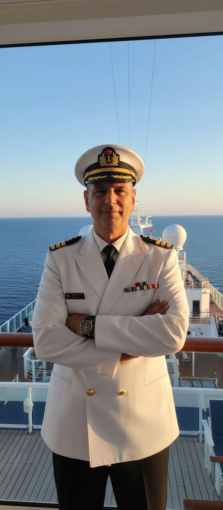

מליסבון ועד ברצלונה, דרך שמונה נמלים וים אחד גדול — כל המשפחה על הסיפון. שתהיה הפלגה בלתי נשכחת, קפטן. יאללה, מעלים עוגן! 🥂⚓
🧢 הקפטן הרשמי של ההפלגה. אל תדאגו, יש לו רישיון. 😄

פוקוס: אוכל · טבע · אקשן · היסטוריה · קניות · קצב מאוזן.
טיול משפחתי · 7 נפשות בליסבון · 5 בברצלונה.
🔴 להזמין עכשיו (נמכר מראש)
7.8 (ו׳) · ארוחת ליל שבת בליסבון: קהילת CIL (ליד בית הכנסת שערי תקווה) — הרשמה מראש, סגירה בד״כ יום ה׳ 18:00; או חב״ד פורטוגל. חלופה: ערב פאדו.
12.8 (ד׳) · אלהמברה — ארמונות הנאסריים: חלון כניסה בשעה מדויקת, קבעו סלוט אחר צהריים (~13:00–14:30). אתר רשמי: alhambra-patronato.es. כולל מיניבוס פרטי מהנמל.
13.8 (ה׳) · סיור טקסי בגיברלטר (חצי יום).
16.8 (א׳) · רובע אל קאל + סינגוגה מאיור בברצלונה: אפשר סיור מודרך לרובע היהודי (אופציונלי).
שעות אוכל באונייה (Norwegian Dawn): ארוחת בוקר במזנון Garden Café מ־07:00 (מוקדם אף יותר בימי נמל) — נוחתים ארוחת בוקר טובה לפני היציאה. ארוחת ערב: חדרי האוכל הראשיים 17:30–21:30, המזנון 17:00–21:30, והפאב O'Sheehan's פתוח 24 שעות (רשת ביטחון לחזרות מאוחרות). בימים עם הפלגה מאוחרת (מוטריל, איביזה) עדיף לאכול בעיר.
חלק א׳
ליסבון · 6–9.8 · 7 נפשות
מידע על הנמל: ליסבון · הכניסה הראשונה לאיחוד → רישום ביומטרי EES.
6אוג׳ · ה׳
ערב הגעהנחיתה 20:55
~21:00–22:00 יציאה מהשדה (אחרי EES + מזוודות), Bolt למלון (מזמינים באפליקציה בשדה, ללא הזמנה מראש). מומלץ מלון מרכזי בבאיישה/שיאדו.
ארוחת ערב קלה ליד המלון — לא להעמיס.
7אוג׳ · ו׳
סיור יום בעיר העתיקה אוכלמודרך · היכרות עם ליסבון
10:00סיור מודרך בעיר העתיקה (בעברית) — מוזמן ✓ · סיור חינמי (מודל טיפ) עם המדריך אמיר כהן. מפגש: מול בית הקפה Graça 77 · Largo da Graça 77 (אזור גראסה/אלפמה — מצפורים יפים). להגיע כמה דק׳ לפני.
אמצע היום נשנוש ב־Time Out Market תוך כדי — מגוון דוכנים, הרבה צמחוני. בלי ארוחה כבדה.
אחה״צ המשך בעיר העתיקה: טרמוואי 28, טירת סאו ז׳ורז׳ה (מבחוץ/מצפור), ומצפורי אלפמה.
~15:00–17:00 🛍️ זמן קניות בנחת — באיישה ושיאדו (Rua Augusta, Rua Garrett; פירוט בהערה למטה). אח״כ חזרה למלון להתרעננות לפני ליל שבת.
ערבארוחת ליל שבת בקהילה היהודית (ליד שערי תקווה) או בחב״ד — 7.8 היא ליל שבת. בבדיקה — טרם אושר מול הקהילה/חב״ד חלופה: ערב פאדו באלפמה (להזמין ל־7). הצעירים אח״כ: Pink Street ובאירו אלטו.
יהדות ליסבון: בית הכנסת שערי תקווה (Rua Alexandre Herculano 59) מקבל מבקרים; אפשר לשלב בסיור העיר העתיקה גם את שרידי הז׳ודיאריה (הרובע היהודי הישן) באזור אלפמה. ארוחת שבת של הקהילה (CIL) — הרשמה מראש (סגירה בד״כ יום ה׳ 18:00); חב״ד פורטוגל מציע גם ארוחות כשרות.
המדריך: אמיר כהן — מדריך סיורים בעברית בליסבון ובפורטו · amir.portugal@siyurim.co.il. מודל טיפ (~€10–15 לאדם). ההרשמה דרך "כוכב ליסבון". הסיור מתחיל בגראסה (מעלה אלפמה) ויורד דרך הסמטאות והמצפורים.
🛍️ קניות: הסיור עובר בבאיישה ושיאדו — רחובות הקניות הראשיים (Rua Augusta, Rua Garrett). שווה לקנות: מוצרי שעם, אריחי אזולז׳וס וקרמיקה, שימורי דגים גורמה, ויין פורט. יש כאן זמן בנחת.
🔔 משימה להיום (7.8) — לקראת סינטרה מחר: לבקש מקבלת המלון ארוחת בוקר מוקדמת/ארוזה ל־8.8 (יוצאים ~07:30 לסיור 08:00), ולוודא את שעת פתיחת הבופה בשבת.
~07:00 ארוחת בוקר מהירה במלון אם הבופה כבר פתוח (בסופ״ש נפתח מאוחר יותר, ~07:30 — לאמת מול הקבלה). אם עדיין סגור — ארוחת בוקר ארוזה מהקבלה (לבקש יום לפני). יוצאים מהמלון ~07:30.
07:50מפגש בתחנת רוסיו — Estação do Rossio, Praça Dom João da Câmara (ליד ה־Starbucks). להגיע 10 דק׳ מוקדם — לא ממתינים למאחרים. מ־Inspira Liberdade ~12 דק׳ הליכה או Bolt קצר.
08:00 יציאה בהסעה מאורגנת (~30 דק׳). אופציית הסעה בלבד — הכניסות נקנות במקום עם המדריך (כפוף לזמינות).
~08:40סינטרה — העיירה ההיסטורית: סיור מודרך + זמן חופשי (~60 דק׳).
~09:45קיינטה דה רגלירה: ביקור וסיור מודרך (~90 דק׳ עם תור בכניסה) — הבאר ההפוכה, מנהרות וגנים. כניסה €22 — נכנסים ✓ (לקנות עם המדריך; נמכר מהר).
~11:30ארמון פנה: ~1.5–2 שעות עם עלייה, תור ונופים בדרך. אנחנו לפארק/גנים בלבד — €10, בלי פנים הארמון. טיפוס תלול; טוק־טוק חוסך את העלייה.
~13:30חוף גינשו (Guincho): עצירת צילום ונוף (~15–20 דק׳).
~14:00קשקאיש: זמן חופשי ~2 שעות — נשנוש קליל מול הים, טיילת ועיר עתיקה.
~16:15 חזרה לליסבון (~40 דק׳) · הורדה ב־Starbucks/רוסיו ~17:00.
20:30ארוחת ערב — La Fiorentina (איטלקית) · מוזמן ✓ · 7 סועדים (מתאים גם לצמחונים).
⏱️ משך רשמי ~9 שעות (08:00–~17:00) — הזמנים לעיל נדיבים בכוונה; אם הכל זורם מהר יותר נחזור מוקדם, עדיף מאשר להרגיש בלחץ. הסדר עשוי להשתנות לפי חלונות הכניסה לארמונות. נשאר זמן למנוחה לפני ארוחת הערב.
👟 הסיור כולל הרבה הליכה, כולל עליות — פחות מתאים למי שמתקשה בהליכה. אין אוכל/שתייה/עישון ברכב. ⚠️ ביטול חינם עד 7.8 בשעה 08:00. · מפעיל: ODYSSEY Tours (טל׳ +351 920 101 898). 8.8 היא שבת — למי ששומר, אפשר במקום בוקר בבית הכנסת שערי תקווה ומנוחה בליסבון.
9אוג׳ · א׳
עלייה לאונייה יום קצרצ׳ק־אין באונייה 12:00–12:30 · הפלגה 18:00
08:00 ארוחת בוקר על הסיפון (Garden Café — פתוח מוקדם בימי נמל). לארוז: בגד ים, מגבת, כובע, קרם הגנה ומים.
~08:15📋 משימת היום: לגשת מוקדם ללאונג׳ הטנדר ולתפוס מספר טנדר נמוך — הסיור שלנו עצמאי (בלי עדיפות אוטומטית), וככה יורדים מהגלים הראשונים ומגיעים בנוחות ל־11:00.
~09:50 מהטרמינל למרינה דה פורטימאו — נקודת המפגש של הסירה היא במרינה, לא בטרמינל (~1.2 ק״מ דרומה): הליכה שטוחה ~15 דק׳ על טיילת הנהר, או טקסי/Bolt ~5 דק׳.
11:00שיט למערות בנאגיל — מוזמן ✓ (Royal Nautic · 7 נפשות). יוצא מהקיוסק במרינה, צ׳ק־אין 10:30. ~2 שעות לאורך הצוקים והמערות (בנאגיל, Marinha) כולל כניסה לתוך מערת בנאגיל ועצירת שחייה. ביטול חינם עד 9.8.
~13:00–16:45 אחרי השיט — מתייבשים ונהנים מפורטימאו: חוף פראיה דה רוקה (צמוד למרינה — צוקים זהובים) או שיטוט בעיר העתיקה (Rua do Comércio, כיכר 1º de Dezembro). נשנוש על הדרך — לא ארוחה מסודרת.
~16:45 חזרה לטרמינל וטנדר לאונייה — יש זמן להתקלח בכיף לפני ההפלגה ב־18:00.
💡 למה קודם השיט ואז העיר? האור שחודר למערת בנאגיל הכי יפה ~10:00–12:00 והים רגוע יותר בבוקר — לכן פותחים בשיט ומשאירים את העיר/החוף לאחה״צ. אין צורך בסיור מודרך נפרד: ההליכה מהטרמינל למרינה עוברת ממילא על טיילת הנהר. מי שרוצה להיכנס פנימה למערה — יש קומבו קטמרן+קיאק.
👟 נמל טנדר — סדר הירידה: ראשונים יורדים בעלי טיול רשמי של NCL, אחריהם Priority Access/סוויטות, ואז שאר הנוסעים לפי כרטיס טנדר (לוקחים מספר בלאונג׳ ומחכים שיקראו לקבוצה). אחרי הגל הראשון (~09:00–09:30) עוברים ל"טנדר פתוח" — יורדים חופשי בלי כרטיס. הסיור שלנו עצמאי (לא של NCL) → אין עדיפות אוטומטית: כדאי לגשת ללאונג׳ מוקדם ולתפוס מספר נמוך. חזרה: בלי כרטיס אבל בתור; טנדר אחרון ~30–45 דק׳ לפני ההפלגה. ⚠️ לוודא קרוב לתאריך שפורטימאו נשארה בלו״ז ההפלגה שלנו (ל־NCL היו שינויי נמלים ב־2026).
קאדיס — עיר עתיקה ואוכל אוכלהיסטוריהיום רגוע · יורדים 10:00
~08:30 ארוחת בוקר על הסיפון בנחת.
10:00 יורדים ישר במרכז העיר — האונייה עוגנת ב־Muelle Ciudad, ~5–10 דק׳ הליכה לעיר העתיקה (בלי הסעות). מתחילים בכיכר סן חואן דה דיוס.
בוקרקתדרלת קאדיס (כיפה זהובה, אפשר לעלות למגדל) וטורה טאבירה — מגדל תצפית עם קמרה אובסקורה והנוף הכי יפה על העיר. אחר כך סמטאות העיר העתיקה וכיכר הפרחים.
אמצע היוםמרקדו סנטרל — שוק אוכל מ־1838; מקום מעולה לנשנש טפאס וטעימות תוך כדי (לא ארוחה מסודרת — הארוחה הגדולה מחכה על הסיפון). דגים טריים והרבה אופציות צמחוניות.
אחה״צגמיש: חוף לה קלטה וטירת סן סבסטיאן, פארק חנוב (Genovés), ורובע La Viña. או קניות סביב Calle Ancha.
~17:45 חזרה לאונייה (דקות ספורות הליכה).
🍤 מנות מקומיות: pescaíto frito (דגים מטוגנים), tortillitas de camarones (לביבות שרימפס), atún de almadraba (טונה). בלי סביליה — חוסכים ~3.5 שעות נסיעה ביום שלא ״הגדול״.
🛍️ קניות: Calle Ancha ורחובות העיר העתיקה — אופנה ספרדית, מזכרות ומעדני שוק (מוחמה/טונה, שרי).
הסעה: מיניבוס פרטי הלוך-חזור מהנמל (~50–75 דק׳ לכיוון). בגרנדה ~11:15, עד ~20:00 בעיר. לא Bolt — כיסוי דליל במוטריל, וקשה מאוד להשיג נסיעה חזרה בערב. 🚫 אין רכבת למוטריל. אוטובוס ALSA זול ותכוף — אבל לא מומלץ לחזרה: יוצא מתחנת האוטובוס (לא מהנמל), ומסוכן מול הפלגה 22:00.
~11:30טיול רגוע במרכז העתיק — הקתדרלה, אלקאיסריה (שוק המשי), ושכונת ריאלחו — הרובע היהודי הישן (גַרנַטַה אל־יַהוד). הכל שטוח וקרוב.
צהרייםטפאס (נשנוש, לא ארוחה מסודרת) — בגרנדה כל משקה מגיע עם טפא חינם. המלצה: Bodegas Castañeda (מ־1927, ליד הקתדרלה, מנות שיתוף). לצמחונים — לומר בהזמנה; או Hicuri Art Vegan (ריאלחו, טבעוני).
~13:00אלהמברה — ארמונות הנאסריים + גני גנרליף + אלקסבה. כרטיס General €22.27. ⚠️ חלון נאסריים מוקדם (~13:00–14:00) — כדי להספיק למופע ב-17:30.
17:30 להגיע ל־Jardines de Zoraya (Calle Panaderos 32, אלבייסין — 2 דק׳ מסן ניקולס).
18:00מופע פלמנקו — מוזמן ✓ · טבלאו אינטימי (~שעה): גיטרה, 2 זמרים ו-2 רקדנים. ביטול חינם עד 11.8.
~19:00 אחרי המופע — סטרול קצר באלבייסין ועלייה למצפור סן ניקולס לנוף הקלאסי על האלהמברה באור אחה״צ (השקיעה עצמה ~21:05 — לא נספיק, ובלי לחץ).
~19:45 ירידה לנקודת האיסוף (פלאסה נואבה / פאסאו דה לוס טריסטס — ואן לא נכנס לסמטאות האלבייסין) → יציאה למוטריל ~20:00.
🔔 עדיין להזמין (דחוף!): (1) כרטיסי אלהמברה — כרטיס General €22.27 ב-tickets.alhambra-patronato.es, חלון נאסריים ~13:00–14:00. אוזל מהר באוגוסט — לקנות מיד. (2) הסעה פרטית הלוך-חזור ממוטריל (מיניבוס ל-7 — Kiwitaxi / Daytrip / monTransport): איסוף בנמל ~10:00, חזרה מגרנדה ~20:00. ✓ מופע פלמנקו כבר מוזמן.
🛍️ קניות — Main Street: רחוב הקניות הראשי, פטור ממע״מ (בשמים, אלכוהול, טבק, אלקטרוניקה — קלאסי לקרוז). נמצא בדרך חזרה מהסלע לנמל, אז קל לשלב ~30–45 דק׳ גם ביום הקצר — לסיים את סיור הטקסי עד ~11:00 כדי להספיק.
🛍️ קניות (~שעה ב-Passeig del Born):פנינות מיורקה (Majorica) — מקומי ומפורסם, לצד מוצרי עור ומותגים ספרדיים ב־Passeig del Born ובעיר העתיקה. משתלב בשיטוט בעיר.
~20:00 עולים לבונקרס דל כרמל לשקיעה — הנוף הכי יפה על העיר (השקיעה באוגוסט בסביבות 20:25).
ערב מזרקת מונז׳ואיק — בדקו לוח זמנים (בקיץ בד״כ ה׳–א׳). אם לא פועל: דינר + בילוי בגראסיה.
🛍️ קניות — שני חלונות: ב-Passeig de Gràcia בצהריים (מותגים ואופנה, ~12:30 במסלול), ורובע El Born אחה״צ (בוטיקים ועיצוב, בדרך לרובע הגותי). מזכרות ומעדנים בשוק לה בוקריה.
17אוג׳ · ב׳
בוקר קליל ואז שדהטיסה 22:35
בוקר אזורי החינם של פארק גואל ותצפית, רכבל מונז׳ואיק, או חוף ברסלונטה. (האזור המונומנטלי בתשלום — אופציונלי.)
צ׳ק־אאוט מאוחר / הפקדת מזוודות, צהריים אחרון.
~19:30 יציאה לשדה (BCN ~30–40 דק׳). שוב תהליך EES ביציאה — מרווח.
מרחקים: ~5 דק׳ הליכה ל־Passeig de Gràcia ולה פדררה · סגרדה פמיליה 2 תחנות מטרו (~10 דק׳ נסיעה) · פארק גואל ~2.2 ק״מ · ~15–20 דק׳ מטרמינל הקרוז · ~25–30 דק׳ משדה BCN (18 ק״מ) · באזור הקניות Balmes/Diagonal.
✓ תואם: 5 אורחים · 2 חדרים · לילה אחד (16→17.8). זכרו: יורדים מהאונייה ב־06:00 אבל צ׳ק־אין רק מ־15:00 — להפקיד מזוודות בבוקר ולצאת לסיור.
◆
הסעות
ליסבון (6.8, 9.8): משתמשים ב־Bolt — מזמינים באפליקציה במקום, ללא הזמנה מראש. ל־7 נפשות + מזוודות לרוב צריך 2 רכבים (או Bolt XL). ברצלונה (16.8, 17.8): עדיף ואן/מיניבוס מוזמן מראש (רכב אחד, בלי לחלק לכמה מוניות).
תאריך
קטע
נוסעים
רכב
6.8
משדה ליסבון (LIS) ל־Inspira Liberdade
7 + מזוודות
Bolt (×2 / XL)
9.8
מ־Inspira Liberdadeלנמל הקרוז (Santa Apolónia)
7 + מזוודות
Bolt (×2 / XL)
16.8
מנמל הקרוז בברצלונהל־Catalonia Diagonal Centro
5 + מזוודות
ואן / מיניבוס
17.8
מ־Catalonia Diagonal Centroלשדה (BCN)
5 + מזוודות
ואן / מיניבוס
ליסבון: השדה (LIS) ~15 דק׳ מהמרכז. נמל הקרוז במזרח (Santa Apolónia / Jardim do Tabaco) — קרוב לאלפמה, ~10–15 דק׳ מהמרכז.
ברצלונה: נמל הקרוז (מסופי Adossat) דורש שאטל קצר עד שער הנמל; משם ~15–20 דק׳ למרכז. השדה (BCN) ~30–40 דק׳ מהמרכז.
איפה מזמינים:ליסבון — Bolt באפליקציה במקום (ללא הזמנה מראש). ברצלונה — חברות הסעה פרטיות/שאטל, איסוף מראש (למשל Welcome Pickups ודומיהם) או דרך המלון; אפשר גם Transfer רשמי של NCL בין הנמל למלון/שדה.
שווה לתת מראש את מספרי הטיסה ושעות ההגעה כדי שהנהג יעקוב אחרי עיכובים.
◆
לוגיסטיקה
הסעות בישראל: לפי הכרטיס — מזוודה רשומה אחת + טרולי לכל כיוון לנוסע. אם כל ה־7 דומים: עד ~7 מזוודות → מיניבוס 9–10 מקומות, במיוחד בחזור (נחיתה 03:40).